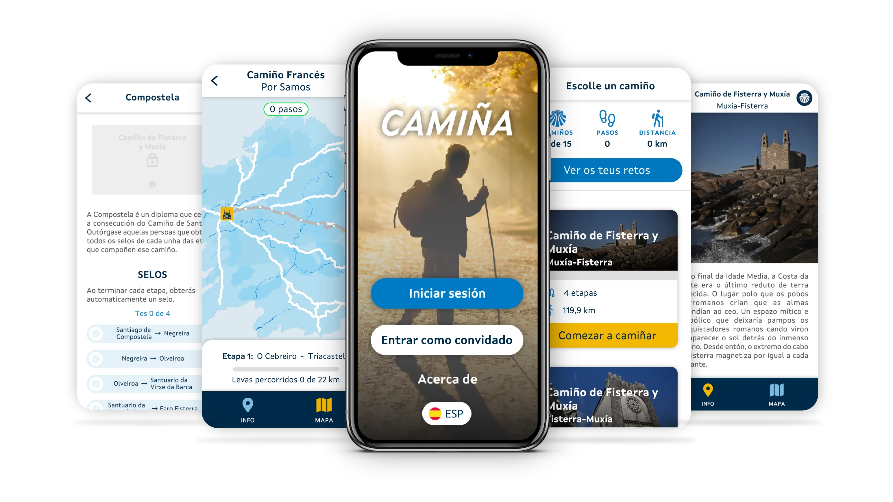

La Consellería de Sanidade de la Xunta de Galicia ofrece en las stores de Apple y Google la aplicación móvil «Camiña», cuyo objetivo es reducir el sedentarismo y promover hábitos beneficiosos para la actividad física.
Disponible tanto en gallego como en castellano, la aplicación cuenta con las siguientes características:
Aplicación móvil, dirigida al público general, invita a caminar en cualquier lugar y los pasos dados se utilizarán para completar las diferentes etapas del Camino de Santiago.
Además, en estas rutas, el usuario será motivado mostrándole datos interesantes como monumentos y adquiriendo sellos por cada etapa con el objetivo de conseguir la Compostela de cada uno de los caminos.

Las características técnicas que muestra la aplicación son:
Iniciar sesión o entrar como invitado: la persona puede registrarse en el servicio É-saude con sus datos personales o acceder como invitado.
Seleccionar ruta: en la aplicación se pueden ver y acceder a las diferentes rutas del Camino de Santiago, desde el Camino Francés hasta el Camino Portugués de la Costa, entre otras.
Ver datos por etapa: dentro de cada Camino de Santiago aparecen las diferentes etapas en las que se divide el camino, se puede acceder a opciones como información histórica de ese tramo, o el mapa para saber dónde se encuentra la persona usuaria./span>
Ver puntos de interés: a medida que la persona usuaria avanza, puede ver diferentes puntos de interés en el mapa que aparecen mientras camina, junto con información asociada como dónde están y qué se puede ver.
Comunicación con aplicación de contador de pasos móvil: la aplicación cuenta los pasos del usuario que se pueden visualizar en cada etapa seleccionada.
El objetivo de la aplicación es reducir el comportamiento sedentario, motivando la práctica de caminar comparando el número de pasos que da el usuario con el número de pasos que daría si estuviera haciendo el Camino de Santiago.
Aunque es una aplicación para todos los públicos, está pensada principalmente para personas mayores de 65 años.
Niveles de seguridad para el acceso a las diferentes funcionalidades de la aplicación: La persona usuaria puede acceder a la app como invitada o iniciando sesión a través de É-Saúde con Chave 365 o certificado digital. Para más información sobre el tratamiento de datos utilizado en esta aplicación, se puede consultar la política de privacidad en el siguiente enlace: Ver política de Privacidad *Para acceder con CHAVE365 es necesario que previamente el paciente autorice su uso de forma presencial en su centro de salud o de forma telemática con DNI electrónico cubriendo el formulario Solicitud de acceso con CHAVE365 y/o certificado digital.